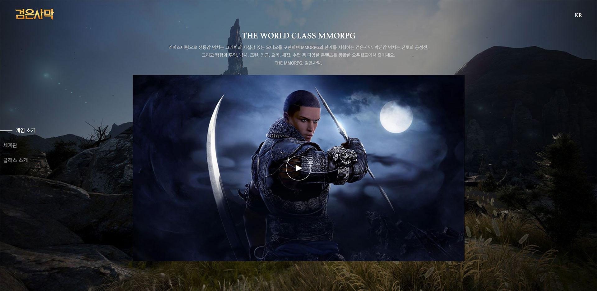
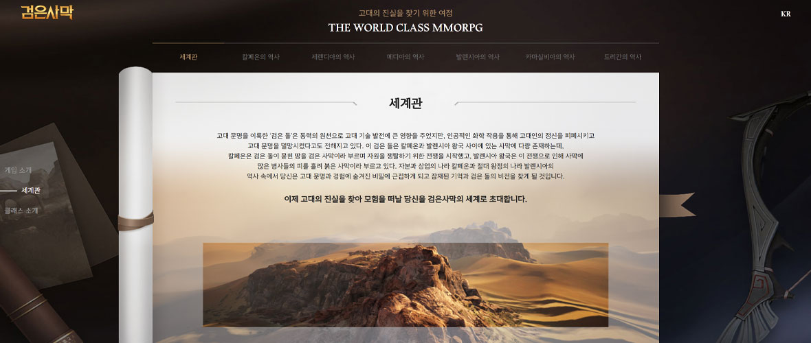
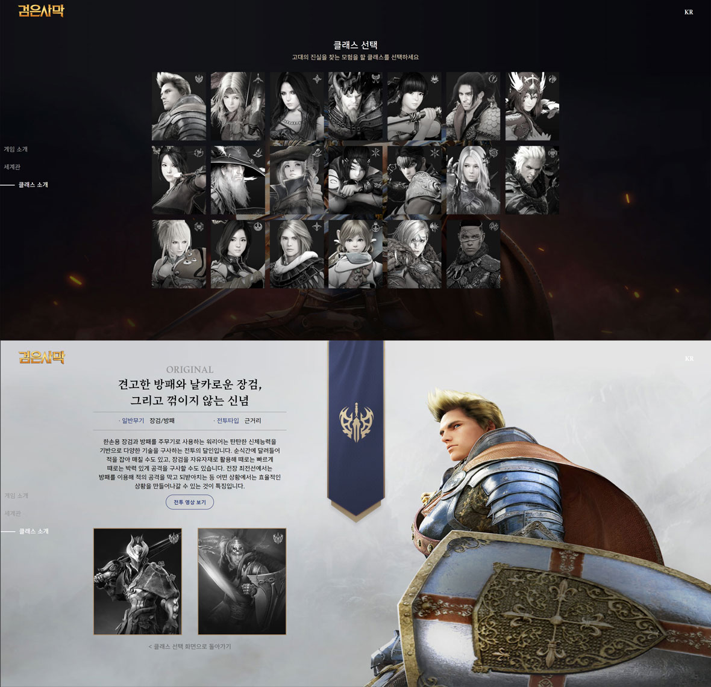

BLACK DESERT
Scroll Down
활용 기술 javascript Scss
제작 기간 2020.10 ~ 2020.11
개요 평소에 게임을 좋아해 게임과 관련된 페이지를 만들고싶어 제작한 페이지입니다. 검은사막 홈페이지에 있는 이미지와 콘텐츠를 활용하였고 검은사막의 스토리와 캐릭터에 관련된 내용을 볼 수 있습니다.

Function
01. 스토리 보기 JSON을 사용하여 클릭한 탭의 이름과 JSON의 키워드와 일치하는 데이터를 불러와 콘텐츠를 보여줍니다.

02. 캐릭터 및 상세정보 검은사막에 등장하는 캐릭터를 선택하면 상세정보를 확인 할 수 있습니다. 스토리와 마찬가지로 JSON을 활용하였습니다.


NETFLIX